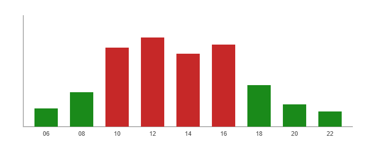

This page contains bar and pie charts using traditional red and green colors with tooltips disabled.
Green bars are hours of low network load. Red bars are hours of high load. High load is normal during business hours and is not a fault.

Average load per hour, measured yesterday.